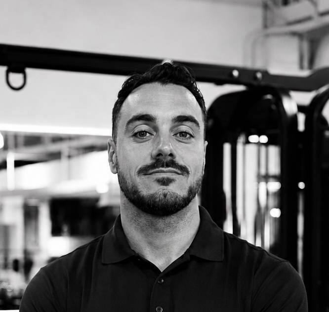
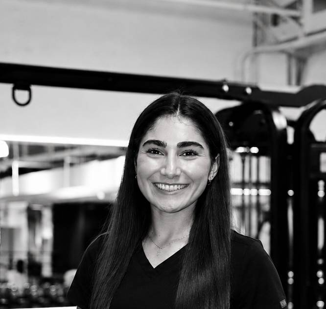
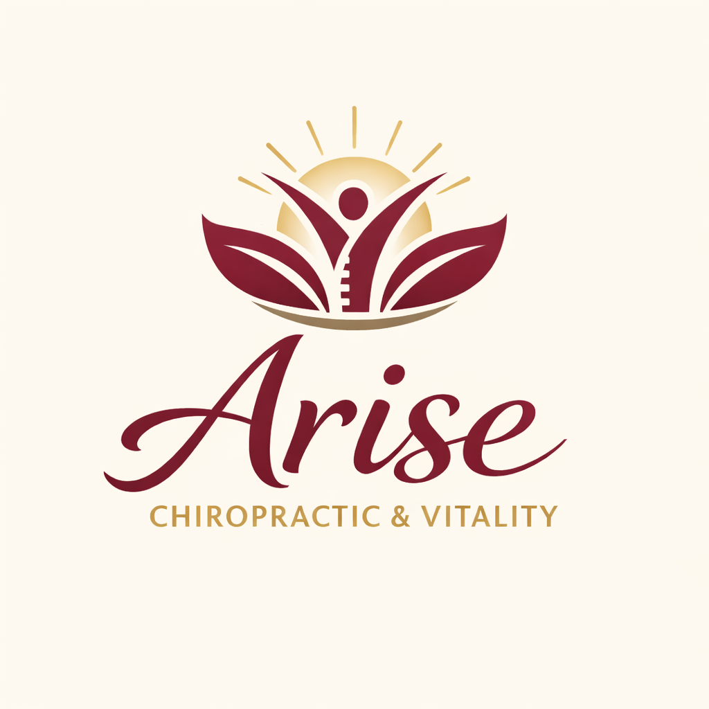

The ecosystem
You tell your story once. Everyone here already knows it.
Four specialists, one plan, one conversation about you happening behind the scenes — instead of four professionals who’ve never met.

Why this exists
Most people don’t have a wellness problem. They have a coordination problem.
A trainer who doesn’t know what you eat. A nutritionist who doesn’t know you’re training for something in April. A massage therapist who never hears about the shoulder. Four good professionals, four separate plans, and you in the middle translating between them.
Here, they talk to each other. When your screening shows a hip restriction, your coach knows, your recovery specialist knows, and your program changes that week — without you making a single phone call.
“Every specialist here is someone I’d send my own family to. That’s the whole bar.”Chandler Thomas · Founder
The four pillars
Meet the people, not the service list.
Tap a pillar to jump to the specialist who runs it.

Coaching
We find out how your body moves before we ask it to do anything.
Every client starts with a functional movement screening — not a workout. Restrictions, imbalances, old injuries you stopped mentioning. From there, programming is progressive, personal, and delivered in your building, 1:1 or small group.
What the others get from this: your screening results go to nutrition and recovery the same week.
Chandler Thomas
Founder & Head Coach
Five years in big tech and enterprise sales, plus a coaching career at Equinox and other respected Austin clubs, before building Konfide In One full time, Chandler now coaches the same kind of founders and executives he once worked alongside. His work starts from one belief, that every limitation has a root cause, so he begins with how your body actually moves, then gives you the curriculum to break through the walls that held you back. And when the answer lives outside the gym, he connects you to the specialist who has it, which is exactly why this ecosystem exists.
KN1 crest logo
Start with training →

Nutrition
A plan built around the week you actually have.
Nutrition coaching through our curated partner, delivered on site. Meal structure, supplementation, and eating patterns matched to what you’re training and how you’re recovering — travel weeks, client dinners, and all.
What this gets from the others: your training load and recovery data shape the plan, so it moves when your body does.
headshot
My Fit Foods
Nutrition Partner
My Fit Foods is our nutrition partner, offering chef-prepared meals built around real macro targets, high protein, calories dialed to your goals, so eating well takes zero planning. No grocery runs, no meal prep, no counting, just food that tastes good and moves you toward your goals, ready when you are.

Recovery
Most of what people call aging is a problem nobody looked at.
Massage, chiropractic and injury care, on site, from day one — not the thing you call after something tears. The stiff hip, the sore shoulder, the pain you’ve been managing instead of fixing. We look for the root cause, then build a plan to move you past it.
What the others get from this: what recovery finds changes next month’s training block, automatically.

Dr. Kevin Hermann · Airrosti
Muscle & Joint Injury Care
Doctor Kevin Hermann at Airrosti provides specialized, non-invasive care for muscle and joint pain, combining targeted deep-tissue work with individualized rehab. But his focus goes deeper than symptoms, he treats the root cause and gives you the knowledge, confidence, and strategies to take control of your own recovery, so you stay active long after you leave his care.
Airrosti logo

Dr. Syra · Arise Chiropractic and Vitality
Chiropractic & Vitality Care
Doctor Syra brings a Doctorate in Chiropractic and a Master’s in Neuroscience to her practice, Arise Chiropractic and Vitality, graduating top of her class at Parker University. She believes the body works as a whole, that pain rarely traces to a single source, so she works with you to find the real root cause and build a personalized plan, with particular strength serving the fitness community and specialized care for prenatal and postnatal recovery. Whatever your goal, she helps you get there by treating what’s actually driving the problem.


Data
Proof, so you stop guessing whether it’s working.
Comprehensive lab work and bloodwork through Nirvanix Health, plus ongoing training and nutrition tracking through Siloh — so you see what’s happening inside your body and what changed week to week, in numbers you can read.
What the others get from this: every quarterly review is where the other three pillars get adjusted.
Dr. Shane Ali · Nirvanix Health
Lab Work & Optimization
Doctor Shane Ali is a board-certified emergency medicine physician who spent years treating preventable disease, and built Nirvanix to get ahead of it instead. Through comprehensive lab work and bloodwork, IV nutrition therapy, and customized optimization plans, he shows you exactly what’s happening inside your body, then gives you a clear, personalized path to peak performance. Because true health isn’t the absence of disease, it’s the energy, clarity, and confidence to operate at your full capacity, in the boardroom and everywhere else.
headshot
Siloh
Training & Nutrition, Connected
Siloh is the first platform that treats your nutrition and training as one connected system, instead of two apps that never talk to each other. Your meals adapt to your training days and your rest days, so your fuel always matches the work you’re putting in. As part of the Konfide In One ecosystem, you get founding member access, in early, at the ground floor of where your plan lives and adapts.
How it comes together
One screening. Four specialists. One plan you never have to manage.
What actually happens after you say yes — and what you never have to do yourself.
Step one
One screening
A functional movement assessment plus baseline body composition. Everything the four specialists need, collected once, by us.
Step two
One plan, four hands
Coach, nutritionist, and recovery specialist build a single plan from that screening. They coordinate; you don’t attend a meeting about it.
Step three
Quarterly recalibration
We re-measure, compare, and adjust all four pillars together. You get the summary in plain language, not a data dump.
The people we hand you to.
Hand-picked, not sourced. Each one vetted personally, and each one talks to your coach.
Airrosti
FAQ
Frequently asked questions
What is the Konfide In One ecosystem?+
The ecosystem is a curated network of specialists working as one accountable team across four integrated pillars — Train, Fuel, Restore and Measure — so training, nutrition, recovery and body composition measurement work together instead of in silos.
What are the four pillars of Konfide In One?+
What is the Train pillar?+
Train is the personal coaching pillar. Every client starts with a functional movement assessment to identify limitations and imbalances. Programming is then tailored, progressive and backed by science, delivered on-site with one-on-one and group options.
What is the Fuel pillar?+
Fuel is the nutrition pillar. Clients receive on-site nutrition coaching covering meal planning, supplementation and eating patterns aligned with their training and recovery, integrated from day one rather than treated as an afterthought.
What is the Restore pillar?+
Restore delivers recovery services — massage, chiropractic and injury care — on-site, working alongside training to accelerate results, reduce injury risk and optimize how clients feel.
What is the Measure pillar?+
Measure tracks progress through comprehensive lab work and bloodwork with Nirvanix Health, plus ongoing training and nutrition tracking through Siloh, so clients see what’s happening inside their body and what changed, in real time.
One conversation
Stop being your own project manager.
Fifteen minutes with me. Tell me what you’ve been juggling, and I’ll tell you which of these four you should start with — even if it’s not with us.
Book a consultation
— Chandler
© 2026 Konfide In One LLC · Austin, TX · Est. 2026